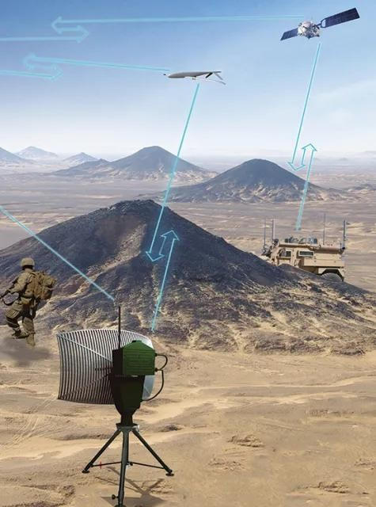
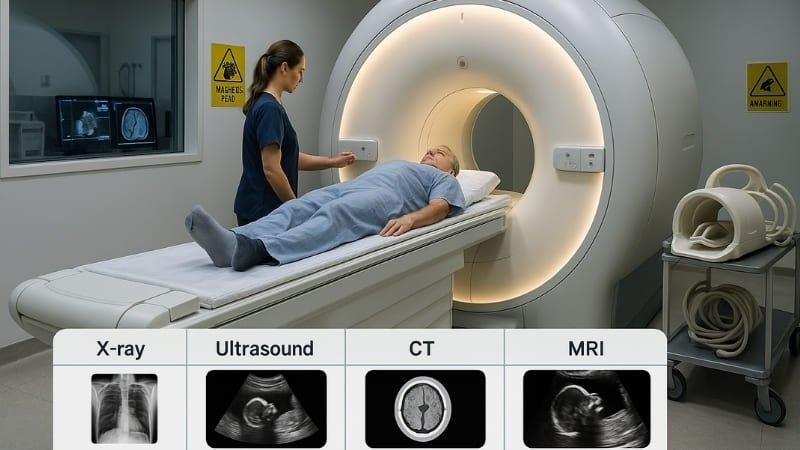
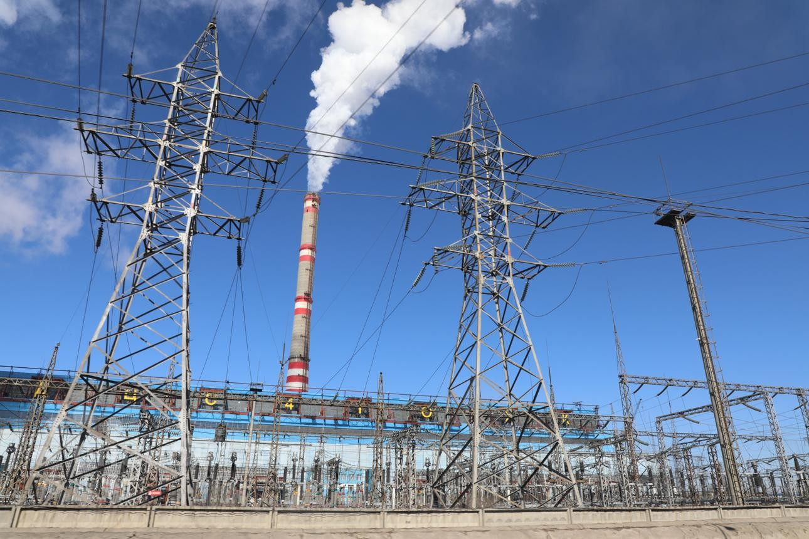
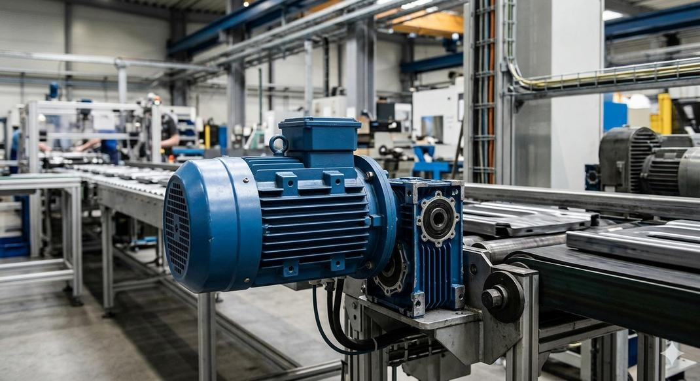
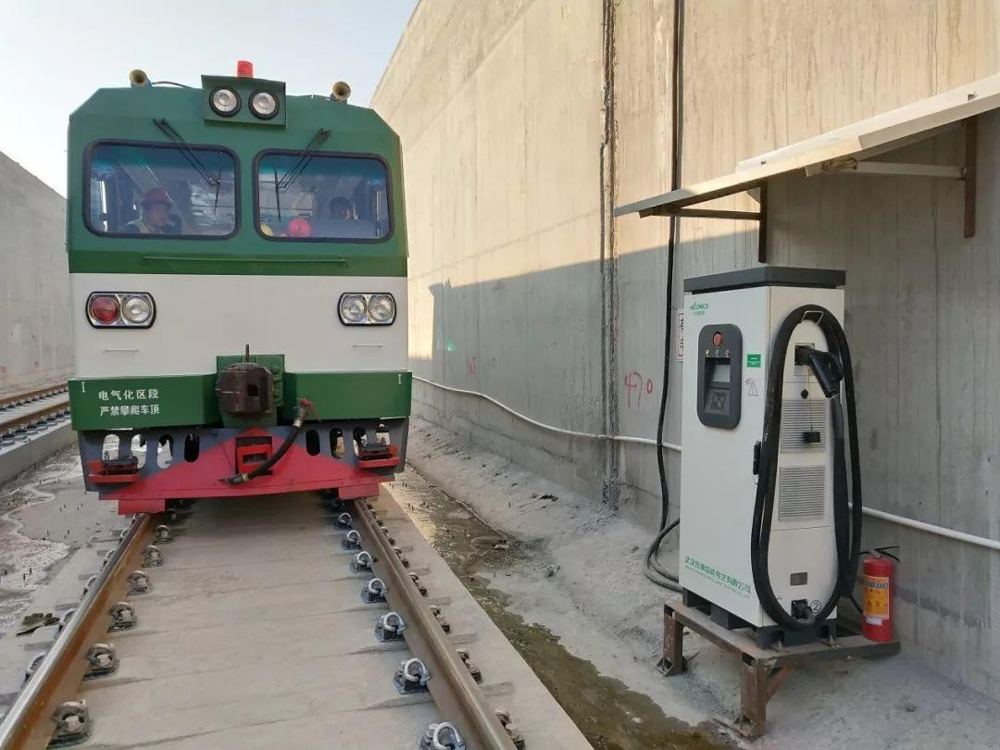
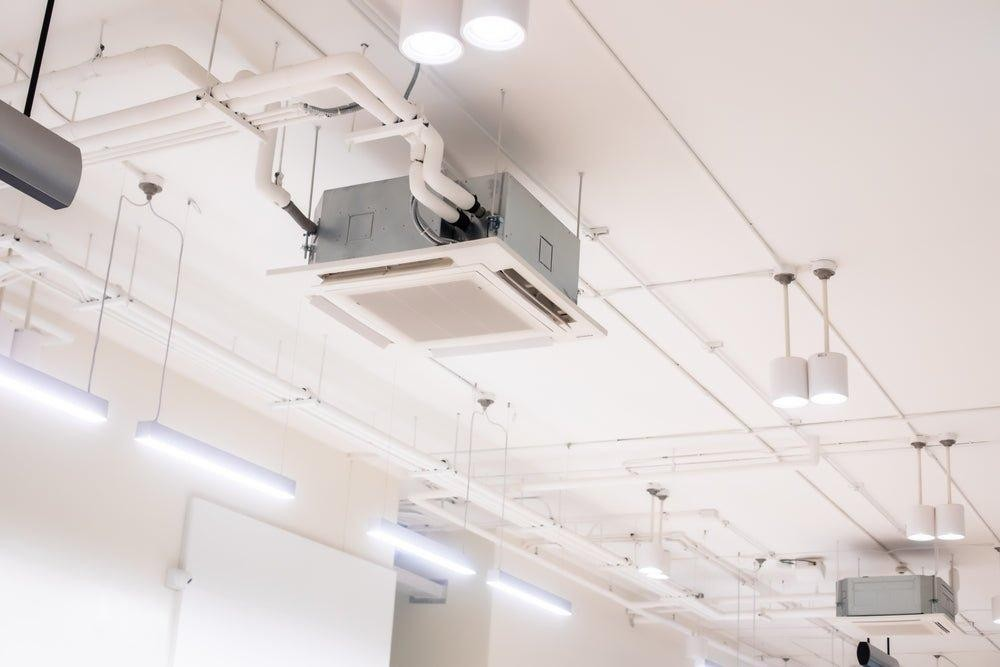

1.1 Definition of Electronics
Electronics is one of the most important branches of engineering that deals with the behaviour, control and utilization of electrons in electronic devices and circuits.
“According to IRE (Institute of Radio Engineering), Electronics is a Branch of Science and Engineering which deals with the study of electronic devices, its processing and utilization.”
Electronics studies devices such as Diodes, Transistors, ICs, Sensors and Microprocessors which are used for processing, controlling and transmitting electrical signals.
1.2 Applications of Electronics
Electronics plays a crucial role across many sectors, from defense and industrial automation to healthcare, telecommunication and domestic applications.

1. Defense
Radar, missile guidance, drones, secure satellite communication, sonar and night vision systems enhance national security.
2. Industrial & Instrumentation
PLCs, robots, inverters, oscilloscopes, multimeters, flow meters and pressure sensors are widely used for automation.

3. Medical
MRI, CT scanners, ECG machines, pacemakers, ultrasound equipment and pulse oximeters assist in diagnosis and patient care.
4. Telecommunication
Smartphones, satellite communication, fiber optic networks and wireless communication enable global connectivity.
5. Domestic
Smart TVs, refrigerators, washing machines, microwave ovens, smart lighting and wearable devices improve daily life.
1.3 Definition of Electrical Engineering
Electrical Engineering is the branch of engineering concerned with the generation, transmission, distribution and utilization of electrical power.
Electrical Engineering is the branch of engineering that deals with the study of generation, transmission, distribution and utilization of electrical power using devices such as generators, transformers, motors and transmission lines.
1.4 Applications of Electrical Engineering
Electrical engineering deals with the generation, transmission, distribution and utilization of electrical power for domestic, commercial and industrial applications.

1. Power Generation
Thermal, hydro, solar and wind power plants generate electricity which is supplied through transformers, substations and transmission lines.

2. Industrial
Electric motors, generators, industrial drives and protection systems operate industrial machines efficiently.

3. Transportation
Electric vehicles, metro railways, elevators, escalators and EV charging stations depend on electrical power.
4. Agriculture
Irrigation pumps, solar pumping systems, dairy equipment, grain processing machines and cold storage improve agricultural productivity.

5. Domestic & Commercial
Lighting systems, HVAC, water pumps, electrical wiring and commercial power distribution are essential in buildings.
1.5 Difference Between Electrical & Electronics Engineering
Electrical Engineering mainly deals with power, whereas Electronics Engineering deals with signals and information processing.
| Electrical Engineering | Electronics Engineering |
|---|---|
| High voltage & high current systems | Low voltage & low current systems |
| Mainly uses AC | Mainly uses DC |
| Generation, transmission & distribution of power | Control, processing & communication of signals |
| Generators, Transformers, Motors | Diodes, Transistors, ICs, Microprocessors |
| Power plants, substations, electric motors | Mobile phones, computers, televisions, medical devices |
⚡ Electrical Engineering = Power Engineering
Generation • Transmission • Distribution • Utilization
🔋 Electronics Engineering = Signal Engineering
Control • Processing • Communication • Automation
2. Basic Electrical Quantities
Electrical quantities are the measurable parameters used to describe the behavior of an electrical circuit. The three most fundamental quantities are Current (I), Voltage (V), and Power (P).
2.1 Electric Current (I)
Definition
Electric current is the rate of flow of electric charge through a conductor. It is the movement of electrons caused by the applied voltage.
Electric Current is the rate at which electric charge flows through a conductor.
Current • Electric Current • Flow of Charge • Line Current
Unit & Symbol
| Quantity | Value |
|---|---|
| Symbol | I |
| SI Unit | Ampere (A) |
| Measuring Instrument | Ammeter |
Formula
Where:
- I = Current (Ampere)
- Q = Electric Charge (Coulomb)
- t = Time (Second)
Current Flow Diagram
Worked Example
Question: If 10 Coulombs of charge flow in 2 seconds, calculate the current.
Given: Q = 10 C, t = 2 s
I = Q / t
I = 10 / 2 = 5 A
2.2 Potential Difference (Voltage)
Definition
Potential Difference is the work done to move one Coulomb of charge from one point to another. It is the driving force that causes current to flow.
Potential Difference is the amount of work done in moving a unit positive charge between two points in an electrical circuit.
Voltage • Potential Difference • Electric Potential • EMF (when produced by a battery)
Unit & Symbol
| Quantity | Value |
|---|---|
| Symbol | V |
| SI Unit | Volt (V) |
| Measuring Instrument | Voltmeter |
Formula
Where:
- V = Voltage (Volt)
- W = Work Done (Joule)
- Q = Charge (Coulomb)
Voltage Across a Load
Worked Example
Question: A battery performs 24 J of work to move 6 C of charge. Find the voltage.
Given: W = 24 J, Q = 6 C
V = W / Q
V = 24 / 6 = 4 Volt
2.3 Electrical Power (P)
Definition
Electrical Power is the rate at which electrical energy is consumed or produced. It indicates how much electrical work is performed in one second.
Electrical Power is the rate of conversion of electrical energy into another form of energy.
Unit & Symbol
| Quantity | Value |
|---|---|
| Symbol | P |
| SI Unit | Watt (W) |
| Measuring Instrument | Wattmeter |
Formula
Where:
- P = Power (Watt)
- V = Voltage (Volt)
- I = Current (Ampere)
Power Consumed by Load
Worked Example
Question: A bulb operates at 12 V and draws 2 A. Calculate the power.
Given: V = 12 V, I = 2 A
P = V × I
P = 12 × 2 = 24 Watt
Important Concept
- Voltage (V) provides the driving force.
- Current (I) is the flow of electrons caused by voltage.
- Power (P) is the electrical energy consumed by the load.
Power Triangle
From the Power Triangle:
V = P / I
I = P / V
2.4 Summary of Basic Electrical Quantities
| Quantity | Symbol | SI Unit | Formula | Meaning |
|---|---|---|---|---|
| Electric Current | I | Ampere (A) | I = Q / t | Flow of electric charge |
| Voltage | V | Volt (V) | V = W / Q | Driving force of current |
| Electrical Power | P | Watt (W) | P = V × I | Rate of electrical energy consumption |
3. Passive Electronic Components
Passive electronic components are devices that do not generate electrical energy. They either oppose, store or transfer electrical energy in an electrical circuit. The three fundamental passive components are Resistor, Capacitor and Inductor.
⚡ Resistor → Opposes Current 🔋 Capacitor → Stores Electric Charge 🧲 Inductor → Stores Magnetic Energy
3.1 Resistor
A resistor is an electrical component that limits or regulates the flow of electric current in a circuit. It is one of the most basic and widely used components in electronics.
Resistor is the physical component, whereas Resistance is its electrical value measured in Ohms (Ω).
Definition
Denoted By
| Parameter | Value |
|---|---|
| Symbol | R |
| SI Unit | Ohm (Ω) |
| Example | R = 10 Ω |
Resistor Symbol
Types of Resistors
There are two main types of resistors:
Fixed Resistors
These have a fixed resistance value that does not change.
- Carbon Composition
- Wire Wound
- Metal Film
Variable Resistors
These allow resistance to be adjusted manually.
- Potentiometer
- Trimmer
- Rheostat
Classification of Resistor
Formula of Resistance
Where:
- R = Resistance (Ω)
- ρ = Resistivity of material
- L = Length of conductor
- A = Cross-sectional area of conductor
Advantages
- Simple design
- Cost-effective
- Stable operation
- Heat dissipation protects circuits
Disadvantages
- Energy loss as heat
- Limited control in fixed resistors
- Heat generation during overload
Applications
- Current limiting
- Voltage divider circuits
- Signal conditioning
- Transistor biasing
- Electric heaters
Refer the solved classroom examples for 4-band and 5-band resistor colour code calculations.
3.2 Capacitor
A capacitor is a passive electrical component that stores electrical energy in the form of an electric field. It consists of two conductive plates separated by an insulating material called a dielectric. Capacitors are widely used for filtering, timing circuits and energy storage.
A capacitor is a passive electronic component that stores electrical energy between two conductive plates in the form of an electric field. The amount of energy it can store is called Capacitance.
Denotation, Symbol & Unit
| Property | Details |
|---|---|
| Denoted By | C |
| Circuit Symbol | |
| SI Unit | Farad (F) |
| Named After | Michael Faraday |
Construction of Capacitor
Capacitance Formula
Where: ε = Permittivity, A = Plate Area, d = Distance between Plates
Units Used in Practice
| Unit | Value |
|---|---|
| Microfarad (µF) | |
| Nanofarad (nF) | |
| Picofarad (pF) |
Types of Capacitors
Ceramic
Most commonly used for high-frequency circuits.
Electrolytic
High capacitance, polarized capacitor.
Film
Excellent stability and long life.
Mica
High precision and RF applications.
Paper
Used in older electronic equipment.
Glass
Reliable in high-temperature environments.
Advantages
- Stores electrical energy efficiently.
- Reduces voltage ripple in power supplies.
- Blocks DC while allowing AC signals to pass.
- Long operational life for non-electrolytic capacitors.
- Consumes very little power.
Disadvantages
- Stores less energy than batteries.
- Electrolytic capacitors have leakage current.
- Higher capacitance increases physical size.
- Polarized capacitors fail if reverse connected.
- Exceeding rated voltage may permanently damage the capacitor.
Applications
Energy Storage
Camera flash circuits and pulse power systems.
Power Supply Filtering
Removes ripple from rectifier output.
Timing Circuits
Used with resistors to generate delays.
Coupling
Blocks DC and passes AC between amplifier stages.
Motor Starting
Provides starting torque in AC induction motors.
3.3 Inductor
An inductor is a passive electronic component that stores energy in a magnetic field whenever electric current flows through its coil. Inductors are widely used in filters, transformers and switch-mode power supplies.
An inductor is a passive component that opposes sudden changes in current by creating a magnetic field. The ability to store magnetic energy is called Inductance.
Denotation, Symbol & Unit
| Property | Details |
|---|---|
| Denoted By | L |
| Circuit Symbol | |
| SI Unit | Henry (H) |
| Named After | Joseph Henry |
Construction of Inductor
Inductance Formula
Where: N = Number of Turns, Φ = Magnetic Flux, I = Current
Practical Units
| Unit | Value |
|---|---|
| Millihenry (mH) | |
| Microhenry (µH) |
Types of Inductors
Air Core
Used for radio-frequency and high-frequency circuits.
Iron Core
Provides high inductance for power applications.
Ferrite Core
Widely used in SMPS and communication circuits.
Advantages
- Stores energy in a magnetic field.
- Excellent current smoothing capability.
- Used in low-pass filters to suppress high-frequency noise.
- Essential component of transformers and wireless charging systems.
- Provides stable operation in power electronic circuits.
Disadvantages
- Bulky for high inductance values.
- Iron-core inductors are comparatively heavy.
- Energy losses occur due to winding resistance and core losses.
- High-quality inductors are relatively expensive.
- Can produce magnetic interference with nearby components.
Applications
Power Supplies
Reduces ripple in DC power supplies.
Transformers
Voltage transformation using magnetic coupling.
Filters
Used in low-pass, high-pass and band-pass filters.
Inductive Sensors
Metal detectors, RFID and proximity sensing applications.
Wireless Charging
Transfers energy through inductive coupling.